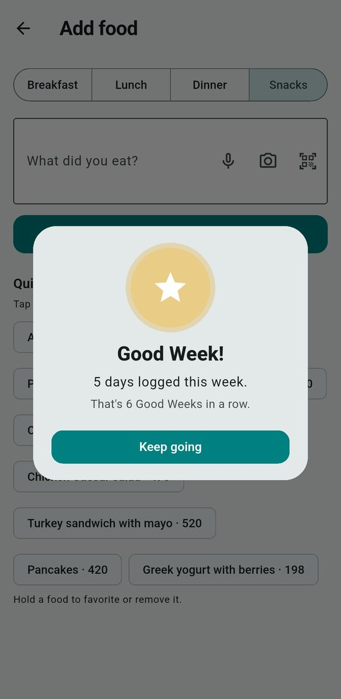

🏅 Progress that rewards showing up Free
No streaks to break. Progress here is about showing up, never about the number: a day over your calorie goal counts exactly like any other, and nothing looks at your calories or weight.



👋
Welcome back
Took a few days off? Your first log back earns a badge, because coming back is the part that matters.
🔔
Gentle reminders
Both optional and off until you turn them on: a Monday 8 am recap of last week, and a 7:30 pm nudge that only appears on a day with nothing logged. Made on your phone.